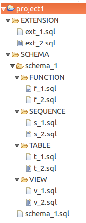

Редактирование pgCodeKeeper проекта
Редактирование проекта состоит в изменении содержимого файлов, а также добавлении и
удалении файлов и каталогов находящихся под pgCodeKeeper проектом.
Примечание: на данный момент pgCodeKeeper не позиционируется как редактор проекта или IDE для разработки БД.
Ручное редактирование объектов может привести к ошибкам в работе программы и к некорректному применению изменений к БД.

Создание новой схемы:
- В папке SCHEMA создать папку с именем схемы.
- В папке SCHEMA создать файл имя_схемы.sql описывающий создание необходимой нам схемы.
- Редактируем файл имя_схемы.sql и сохраняем его.
Новая схема создана в pgCodeKeeper проекте. Для применения изменений к БД просто обновляем БД как
описано в инструкции Руководство pgCodeKeeper -> Задачи -> Обновление БД.
Создание новой таблицы:
- Выбираем схему в которой будем создавать таблицу
- В папке SCHEMA -> имя_схемы -> TABLE создать файл имя_таблицы.sql
описывающий создание новой таблицы. Если папка TABLE отсутствует, то необходимо ее создать.
- Редактируем файл имя_таблицы.sql и сохраняем его.
Новая таблица создана в pgCodeKeeper проекте. Для применения изменений к БД просто обновляем БД как
описано в инструкции Руководство pgCodeKeeper -> Задачи -> Обновление БД.
Примечание: содержимое таблиц (ограничения (constraints), индексы, триггеры и правила (rule)) записываются в sql-файл таблицы.
Создание нового представления:
- Выбираем схему в которой будем создавать представление
- В папке SCHEMA -> имя_схемы -> VIEW создать файл имя_представления.sql
описывающий создание нового представления. Если папка VIEW отсутствует, то необходимо ее создать.
- Редактируем файл имя_представления.sql и сохраняем его.
Новое представление создано в pgCodeKeeper проекте. Для применения изменений к БД просто обновляем БД как
описано в инструкции Руководство pgCodeKeeper -> Задачи -> Обновление БД.
Создание новой функции:
- Выбираем схему в которой будем создавать функцию
- В папке SCHEMA -> имя_схемы -> FUNCTION создать файл имя_функции.sql
описывающий создание новой функции. Если папка FUNCTION отсутствует, то необходимо ее создать.
- Редактируем файл имя_функции.sql и сохраняем его.
Новая функция создана в pgCodeKeeper проекте. Для применения изменений к БД просто обновляем БД как
описано в инструкции Руководство pgCodeKeeper -> Задачи -> Обновление БД.
Примечание: перегруженные функции (имеющие одинаковое имя, но различающиеся сигнатуры) записываются в одном sql-файле.
Создание новой последовательности:
- Выбираем схему в которой будем создавать последовательность
- В папке SCHEMA -> имя_схемы -> SEQUENCE создать файл имя_последовательности.sql
описывающий создание новой функции. Если папка SEQUENCE отсутствует, то необходимо ее создать.
- Редактируем файл имя_последовательности.sql и сохраняем его.
Новая функция создана в pgCodeKeeper проекте. Для применения изменений к БД просто обновляем БД как
описано в инструкции Руководство pgCodeKeeper -> Задачи -> Обновление БД.
Для редактирования существующего объекта достаточно изменить содержимое его файла в проекте.